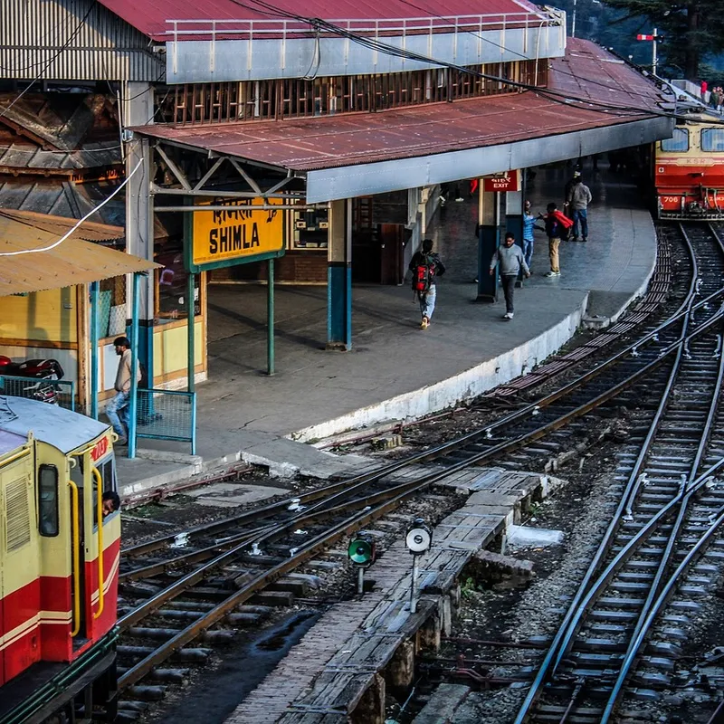

कोर्स › ACS डिजिटल मित्र: बुनियादी कौशल में प्रमाणपत्र › खंड-7: ग्राहक-सेवा व सरकारी portal
पाठ 7.10: ticket booking: IRCTC की समझ (mock)

📚 सब पाठ: किसी भी पाठ पर सीधे जाओ
इस पाठ के बाद तुम कर पाओगे: (1) IRCTC-खाते का सही मालिक समझाना, (2) ईमानदारी-रेखा बताना — निजी खाते से व्यावसायिक booking मना, (3) booking की सीढ़ी mock-विधि से सिखाना, (4) ticket-जाल पहचानवाना।
पहले ईमानदारी-रेखा — यह पाठ नियम से शुरू होता है
counter पर सबसे ललचाने वाली माँग यही है: "भैया, ticket काट दो — पैसे ले लेना।" रुको। IRCTC (आई-आर-सी-टी-सी — रेलवे की online ticket-सेवा) के नियम में खाते दो क़िस्म के हैं: निजी खाता — आदमी अपने और अपने परिवार-जैसों के सफ़र के लिए, और अधिकृत agent-खाता — जो बाक़ायदा अनुमति लेकर, agent-नियमों के भीतर, दूसरों की ticket व्यावसायिक रूप से काटता है। लकीर साफ़ है: अपने निजी खाते से पैसे लेकर दूसरों की ticket काटना नियम-विरुद्ध है — पकड़ में आने पर खाता बंद, ticket रद्द और क़ानूनी कार्रवाई तक की नौबत; "सबका चलता है" इसका बचाव नहीं (6.10 की सीख: नियम खले तो भी मानो, रास्ता लिखकर पूछो)। तो डिजिटल मित्र करे क्या? वही जो 7.08 में बैंक पर किया: सिखाओ — ग्राहक का अपना IRCTC-खाता बनवाओ, booking की सीढ़ी उसकी उँगली से चलवाओ, अपनी सिखाने-की फीस लो (6.11 दर-सूची)। और जिसे यह काम धंधे के रूप में करना है, उसके लिए ईमानदार पंक्ति: अधिकृत agent बनना अलग विषय है — उसकी अनुमति-प्रक्रिया व शर्तें IRCTC के आधिकारिक रास्ते से ही जानो-अपनाओ; बिना उस अनुमति के "ticket-काउंटर" मत खोलो।
खाता और सीढ़ी — ग्राहक की उँगली से (NIOS-58)
काल्पनिक उदाहरण — सुरेश के पास गीता देवी आईं: बेटे के पास जाना है, ticket सीखनी है। तीन अटल पंक्तियाँ (7.03) यहाँ भी: mock बनावटी पर्चों पर — असली booking "अभ्यास" में कभी नहीं (असली पैसा + असली सीट दोनों दाँव पर)। खाता: गीता देवी का अपना — उनका mobile, उनकी email, चाबी-निर्माण 7.08 के नियम से (मित्र दूर)। booking-सीढ़ी: (1) खोज — कहाँ-से-कहाँ, तारीख़, गाड़ियों-दर्जों की सूची; (2) चुनाव — गाड़ी, दर्जा (शयनयान/कुर्सीयान…), उपलब्ध/प्रतीक्षा (waiting) का फ़र्क़ समझाओ — प्रतीक्षा-ticket यानी सीट पक्की नहीं, यह बात booking से पहले बतानी है, बाद में नहीं; (3) यात्री-ब्योरा — नाम-उम्र हूबहू पहचान-पत्र जैसे (7.04 हिज्जे-मिलान — सफ़र में जाँच होती है); (4) रुक-जाओ — भुगतान से ठीक पहले गाड़ी-तारीख़-यात्री-रक़म चारों पढ़ो (7.09 की घड़ी, STOP-BEFORE-SUBMIT का यहाँ रूप); भुगतान गीता देवी के अपने UPI/खाते से — 7.09 की पूरी विधि; (5) ticket सँभालना — e-ticket phone में + SMS; सफ़र में ticket के साथ वही पहचान-पत्र चाहिए जो भरा था — यह पंक्ति छूटी तो स्टेशन पर आँसू। booking की माँग-संख्या/रसीद register (7.02) में, और प्रतीक्षा-ticket हो तो सातवें खाने में "यात्रा से पहले स्थिति-जाँच" की तारीख़ — follow-up की वही पुरानी ताक़त।
ticket-जाल — तीन चेहरे
जाल-1: नक़ली "confirm करवा दूँगा" — "प्रतीक्षा-ticket पक्की करवा दूँगा, अंदर setting" — 7.07 वाला setting-झूठ, रेल-पोशाक में; सीट का फ़ैसला रेलवे की अपनी व्यवस्था से होता है, जेबों से नहीं। जाल-2: नक़ली site/app — ticket के नाम पर मिलती-जुलती sites; द्वार-नियम वही: IRCTC की आधिकारिक site/app ख़ुद टाइप/आधिकारिक store से (7.08 की तीन पहचानें)। जाल-3: "सस्ती ticket" का सौदा — बाज़ार-भाव से सस्ती ticket बेचने वाला या तो नक़ली PDF थमाता है या किसी और के/जुगाड़ू खाते की नियम-विरुद्ध ticket — दोनों सूरतों में सफ़र के दिन फँसता ग्राहक है। ग्राहक को एक-पंक्ति कसौटी दो: ticket का दाम वही सच है जो आधिकारिक portal दिखाए; उससे सस्ता "सौदा" दाम नहीं, जाल है।
एक नज़र में — ईमानदारी-रेखा और सीढ़ी
करके देखो (अभी, 2 मिनट)
घरवाले से दो सवाल: (1) "मैं अपने खाते से पैसे लेकर मोहल्ले भर की ticket काटूँ — ठीक है?" (2) "प्रतीक्षा-ticket मिली यानी सीट पक्की?" दोनों के सही जवाब (नहीं — वह अधिकृत agent-अनुमति का काम है · नहीं — प्रतीक्षा यानी क़तार में नाम) बोलकर समझाओ। यही NIOS-58 की ज़बानी कसौटी है।
छोटा टेस्ट: 5 प्रश्न
हर प्रश्न में सही विकल्प छूकर जवाब दो। सही होने पर हरा, ग़लत पर लाल दिखेगा। बिना छुए जाँचना हो तो "उत्तर देखो" खोलो।
प्र-1. "भैया, अपने खाते से मेरी ticket काट दो, पैसे ले लेना" — मित्र का सही जवाब?
उत्तर देखो
उत्तर: (ग)। लकीर खाते की क़िस्म से है — व्यावसायिक काम अधिकृत agent-खाते का; मित्र की वैध कमाई सिखाने की फीस है। बाक़ी क्यों ग़लत: (क) खाता-बंदी + क़ानूनी नौबत वाला "धंधा"; (ख) नियम पैसे से नहीं, काम की क़िस्म से बँधा है — और दूसरों की नियमित booking निजी खाते का काम नहीं; (घ) जुगाड़ = वही जुर्म, खाता दोस्त का।
प्र-2. जिसे ticket-booking को बाक़ायदा धंधा बनाना है, उसका सही रास्ता?
उत्तर देखो
उत्तर: (ख)। व्यावसायिक booking का वैध दरवाज़ा agent-अनुमति ही है — शर्तें आधिकारिक स्रोत से (अंदाज़े/सुनी-सुनाई से नहीं)। बाक़ी क्यों ग़लत: (क) कई खाते = कई सबूत, बचाव नहीं; (ग) अनुमति आदमी-दर-आदमी है, किराए की चीज़ नहीं; (घ) "जमने तक जुर्म" — पकड़ पहले दिन भी हो सकती है।
प्र-3. प्रतीक्षा (waiting) ticket के बारे में ग्राहक को कब और क्या बताना है?
उत्तर देखो
उत्तर: (क)। फ़ैसले की जानकारी फ़ैसले से पहले — यही 7.01 का झूठा-दिलासा-निषेध है; बाद में बताना धोखे जैसा लगता है। बाक़ी क्यों ग़लत: (ख/घ) देर से बताया सच भी शिकायत बनता है; (ग) "हमेशा पक्की" झूठ है — होती तो उसे प्रतीक्षा कहते ही क्यों।
प्र-4. यात्री-ब्योरा भरते समय नाम-उम्र किससे मिलाकर लिखोगे?
उत्तर देखो
उत्तर: (घ)। सफ़र में ticket+पहचान-पत्र का मिलान होता है — बेमेल नाम स्टेशन पर आँसू है (7.04 हिज्जे-मिलान का रेल-रूप)। बाक़ी क्यों ग़लत: (क/ख) ज़बानी/पुकारू नाम दस्तावेज़ से भिड़ता नहीं; (ग) भरी उम्र काग़ज़ से मिलनी चाहिए, चेहरे से नहीं।
प्र-5. "बाज़ार से सस्ती confirm ticket दिलवा दूँगा" — सही कसौटी?
उत्तर देखो
उत्तर: (ग)। सस्ती का स्रोत या नक़ली PDF या नियम-विरुद्ध खाता — दोनों में सफ़र के दिन फँसता ग्राहक है। बाक़ी क्यों ग़लत: (क) "फ़ायदा" स्टेशन तक ही है; (ख) ठग को आधा भी पूरा डूबना (7.05); (घ) त्योहार तो ठगों की फ़सल है।
अगला पाठ → 7.11: online course में दाख़िला — ख़ुद सीखते रहना।
वीडियो (Video)
इस पाठ का जाँचा-परखा वीडियो जल्द यहीं जुड़ेगा। तब तक दो जीवित रास्ते:
🎬 YouTube पर इस पाठ के वीडियो खोजें
(दोनों नई खिड़की में; वीडियो बिना भी पाठ पूरा। पढ़ाई कहीं नहीं रुकती।)